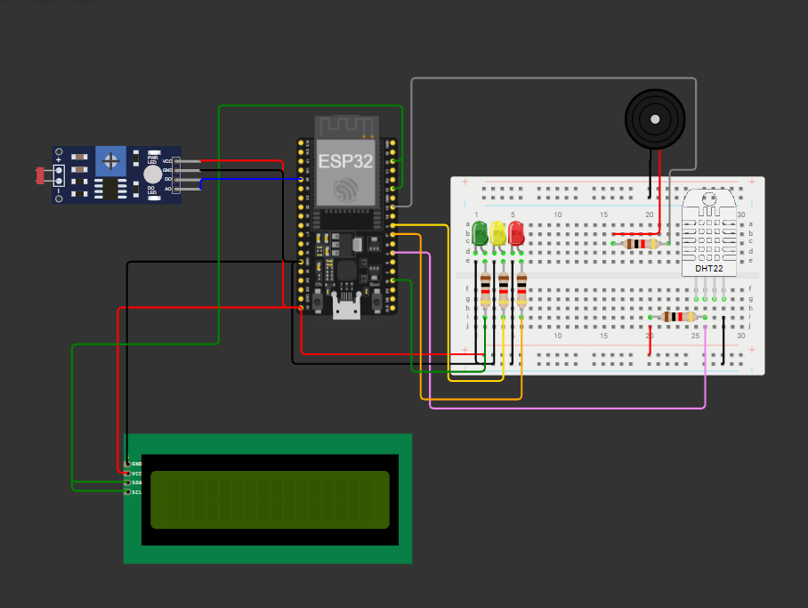
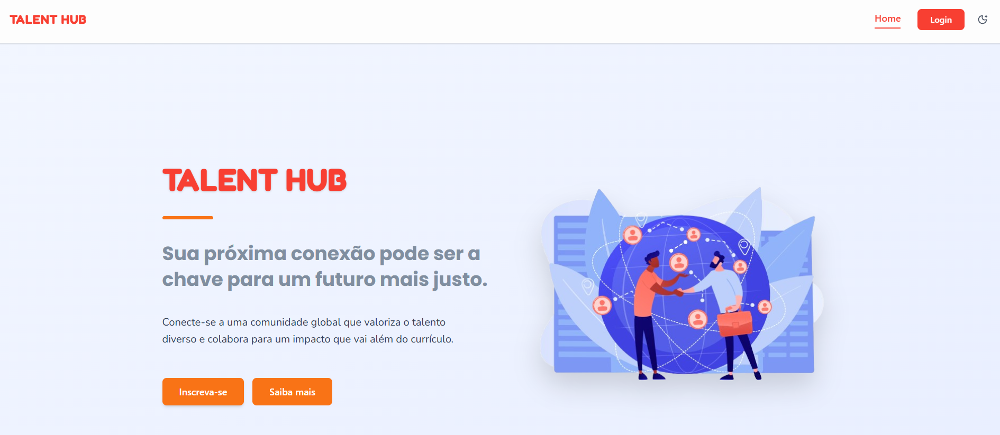

Olá, eu sou Matheus von Koss Wildeisen
Estudante de Engenharia de Software que transforma problemas reais em soluções digitais simples e funcionais, unindo lógica, código limpo e atenção aos detalhes.
Sobre mim
Quem eu sou
Sou estudante de Engenharia de Software na FIAP Paulista, atualmente no 4º semestre, e tenho grande interesse por tecnologia e por tudo que ela pode resolver na prática. Ao longo do curso venho desenvolvendo conhecimento em Java, HTML, CSS, React, Git/GitHub e Edge Computing, além de um contato inicial com design 3D. Um dos projetos que mais gostei de desenvolver foi um sistema de monitoramento ambiental com ESP32 e sensores para uma vinheria inteligente, unindo Edge Computing e automação de alertas em tempo real. Gosto de aprender na prática, testando e entendendo cada parte do processo antes de avançar para o próximo desafio.
Ainda não tive experiência profissional na área, mas estou em busca da minha primeira oportunidade para aplicar o que venho aprendendo, crescer tecnicamente e contribuir com projetos reais. Tenho facilidade para estudar novas tecnologias por conta própria e busco um ambiente onde eu possa aprender com outros desenvolvedores, ganhar experiência prática e evoluir junto com a equipe.
Habilidades
O que eu uso no dia a dia
Front-end
HTML, CSS, JavaScript, React ou outra stack de sua preferência.
Back-end
Node.js, APIs REST, bancos de dados relacionais/NoSQL.
Ferramentas
Git, VS Code, Figma, deploy em Vercel/Netlify.
Soft skills
Comunicação, resolução de problemas, trabalho em equipe.
Portfólio
Projetos selecionados

Sistema IoT de Monitoramento Ambiental
A solução permite visualizar as condições do ambiente e acionar alertas automáticos (LEDs e buzzer) conforme as medições, além de permitir controle manual via MQTT.
SENTINEL AGRO
Nesta entrega da Global Solution, o projeto é implementado como um sistema de monitoramento e triagem de riscos utilizando grafos ponderados, árvores binárias de busca (BST), algoritmos de Força Bruta e algoritmos Gulosos (Dijkstra + Prim), aplicados a dois cenários brasileiros reais:

TalentHub
O TalentHub é uma plataforma web desenvolvida com o objetivo de conectar profissionais (talentos) a empresas e oportunidades de trabalho. A aplicação permite que os usuários criem perfis profissionais contendo suas habilidades, experiências e portfólio, enquanto empresas podem buscar, filtrar e encontrar talentos ideais para vagas disponíveis. O sistema foi pensado para facilitar o processo de recrutamento, centralizando informações importantes em um único ambiente digital de forma simples, moderna e eficiente.
Vamos conversar?
Estou aberto a novas oportunidades, projetos freelance ou apenas trocar uma ideia sobre tecnologia.